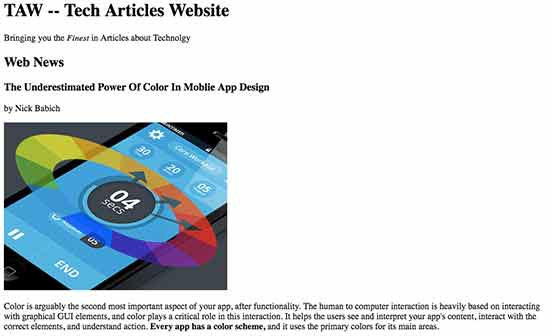

Adonis Sequence is a web design and development group made up of four greatly talented individuals. They will create, redesign, and streamline any website or project. Here are some examples of their work:
Adonis Sequence is made up of four greatly talented individuals. Adonis Sequence is made up of four greatly talented individuals. Adonis Sequence is made up of four greatly talented individuals. Adonis Sequence is made up of four greatly talented individuals.
Nick Ziemba is a project manager at The Adonis Sequence. He is proficient with JavaScript and HTML, and enjoys finding efficient ways to code and reduce load times. Before coming to Adonis Sequence, Nick worked primarily in freelance jobs, creating a website for the Function Four tech event.
Austin Shaffer is a designer for The Adonis Sequence. His background comes from freelancing jobs for companies such as Nerds Buy PC, and designing websites for popular events such as New York’s yearly Setsubun. He believes that every client could deserves a classy look and a beautiful design.
Jon Chase is a designer for The Adonis Sequence. The designer job is to make the website more appealing to the customer. Jon enjoys helping make company websites more colorful and pleasing to the eye. Jon past project that he did was to make a website for a classical music more appealing for people to show up to the concert. Jon enjoy making the website more appealing on the website to get more people attention.
Nick Kyler is a developer for The Adonis Sequence. Nick works well in coding because he enjoys the constant challenge of learning and coding effectively. Proficient in JavaScript, html, MySQL, and CSS. Nick Kyler has made websites for different racing events to help promote their events.